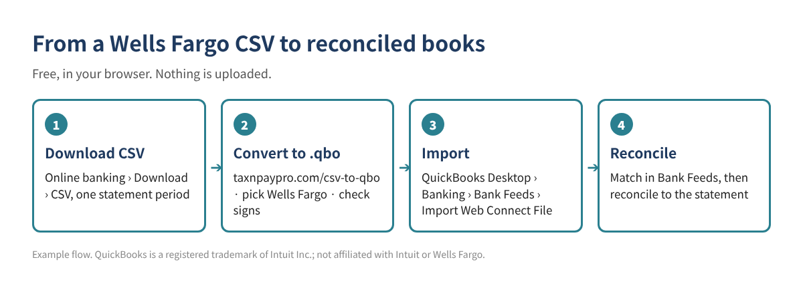

How to Import Wells Fargo CSV Transactions into QuickBooks Desktop (Free CSV to QBO Converter)
You downloaded your Wells Fargo activity as a CSV file, but QuickBooks Desktop doesn't import CSV files into the bank register. It imports Web Connect (.qbo) files, or IIF files for older versions. This guide shows how to get the CSV from Wells Fargo, what its columns look like, how to turn it into a .qbo file for free in your browser, and how to import and check it.
Short version: download CSV from Wells Fargo → open the free CSV to QBO converter → pick Wells Fargo → check the preview and balance → save the .qbo → in QuickBooks Desktop go to Banking › Bank Feeds › Import Web Connect File.

Step 1. Download the CSV from Wells Fargo
In Wells Fargo Online, choose the account, open Download Account Activity (under the Accounts tab), confirm the From and To dates, select Comma Delimited and click Download. By default a download covers the last 90 days; for some account types you can go back up to 18 months.
Step 2. Know your Wells Fargo CSV layout
The converter recognizes the Wells Fargo layout below and sets the columns and signs for you. It helps to know them so you can spot a wrong file.
| File | Columns (as of 2026) | What to watch |
|---|---|---|
| All accounts | No header row: Date, Amount, *, Check #, Description | The file has no column titles. The converter recognizes this layout when you pick Wells Fargo in the bank list. |
Here is what three rows look like after the converter reads them. These are example values, not real transactions:
| Date | Payee | Amount (QuickBooks sign) |
|---|---|---|
| 10/03/2026 | COFFEE SHOP #12 (example) | -8.75 |
| 10/05/2026 | OFFICE SUPPLY STORE (example) | -142.30 |
| 10/07/2026 | CLIENT DEPOSIT (example) | 500.00 |
Step 3. Convert the CSV to a .qbo file
- Open taxnpaypro.com/csv-to-qbo. The file is read in your browser; nothing is uploaded.
- Drop in your CSV and choose Wells Fargo in the bank list (or leave it on automatic).
- Check the preview: dates, payees and especially the sign of each amount.
- Enter the statement ending balance if you have it. The converter compares it with the file so you see a difference before you import.
- Enter the last digits of the account number, then save the .qbo file (or .iif if your QuickBooks version no longer supports Web Connect).
Step 4. Import into QuickBooks Desktop
- Back up your company file first.
- Go to Banking › Bank Feeds › Import Web Connect File and open the saved .qbo file.
- The first time, choose Use an existing QuickBooks account and pick the matching bank or card account. Linking it to the wrong account is the most common mistake.
- Review the downloaded transactions in the Bank Feeds Center, add or match them, then reconcile against the statement.
Wells Fargo also offers Web Connect downloads for some business accounts. If that file imports cleanly, you don't need to convert. Use the converter when you only have the CSV or the bank file won't import.
Common mistakes
- Overlapping date ranges. Downloading 10/1–10/31 and then 10/15–11/15 can bring in the same transactions twice. Keep periods back to back, matching statement dates.
- Wrong sign. If deposits show up as payments, the file was read with the wrong layout. Pick Wells Fargo in the bank list and check the preview again.
- Wrong account. Each .qbo file carries an account number. If the first import was linked to the wrong account, later files follow it.
- Old QuickBooks version. Web Connect works only on versions Intuit still supports, usually the last three releases. On older versions, use IIF.
- Pending transactions. Leave out rows that haven't posted yet; they change or disappear.
FAQ
Is it safe to put my bank file into an online converter?
This converter runs entirely in your browser. The file isn't uploaded to a server. Still, never share bank passwords, and delete downloaded files you no longer need.
Does Wells Fargo offer a QuickBooks file directly?
Some banks and some account types do. If the bank's own QuickBooks or Web Connect file imports without errors, use it. The converter is for when you only have a CSV or the bank file fails.
I get "unable to verify the financial institution". What now?
QuickBooks checks a bank ID inside the .qbo file. In the converter's settings you can change the bank ID (INTU.BID); the default 3000 works for many banks.
I use QuickBooks Online. Do I need this?
Usually not. QuickBooks Online can upload CSV files directly in its Banking screen. This guide is for QuickBooks Desktop.
Checklist
- ☐ CSV downloaded for one statement period
- ☐ Bank set to Wells Fargo in the converter
- ☐ Signs checked in the preview
- ☐ Ending balance compared
- ☐ Company file backed up
- ☐ Linked to the correct account on first import
- ☐ Reconciled to the statement
Need a workbook for cleanup after import? The Duplicate Transaction & Bank Reconciliation Difference Finder is a free download (Excel + PDF guide, no sign-up).
This article is general educational information, not tax, legal or accounting advice. Bank download menus and file layouts change; check your own file before importing. Example values are made up.
QuickBooks is a registered trademark of Intuit Inc.; not affiliated with or endorsed by Intuit. Wells Fargo is a trademark of its owner; this article is not affiliated with or endorsed by Wells Fargo.
Sources: Wells Fargo: Account Activity questions · Wells Fargo: QuickBooks (Web Connect) · Free Bank CSV to QBO converter